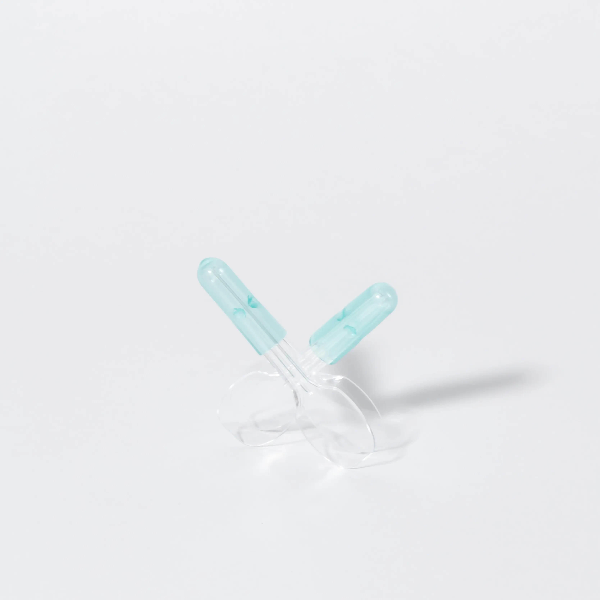
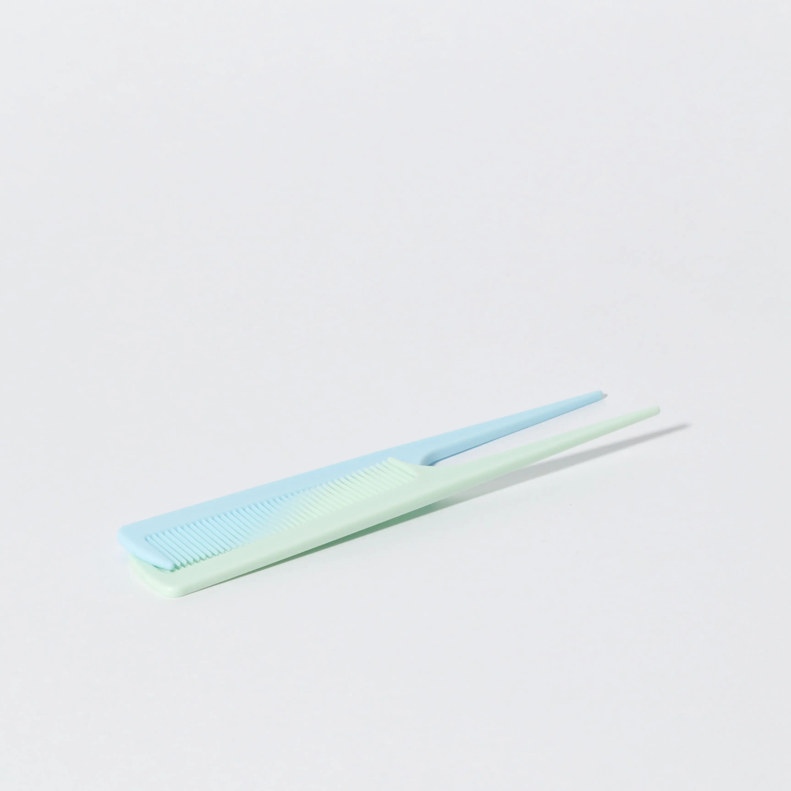
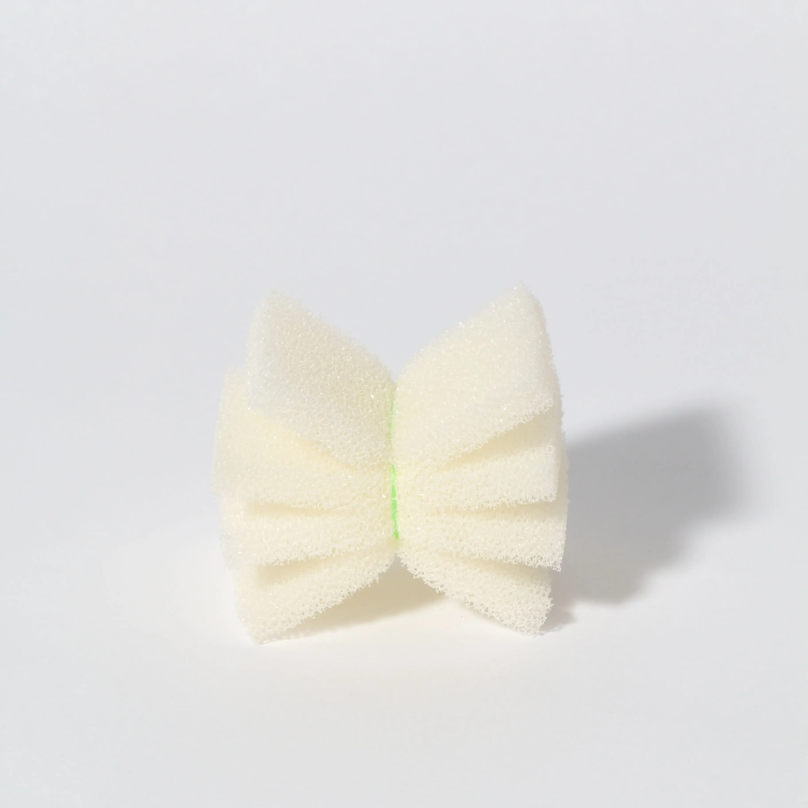
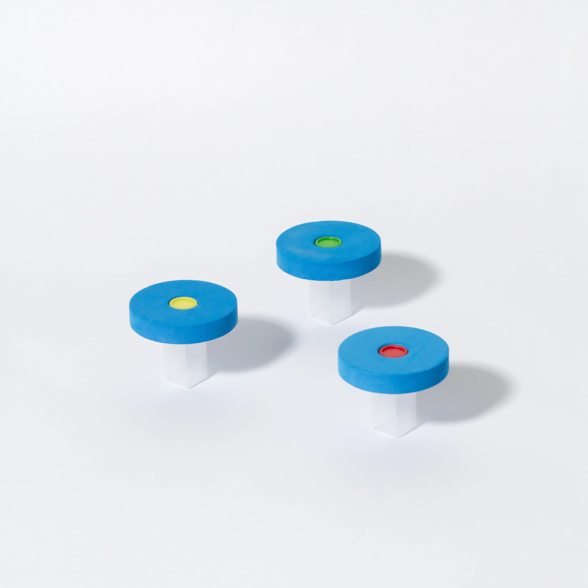
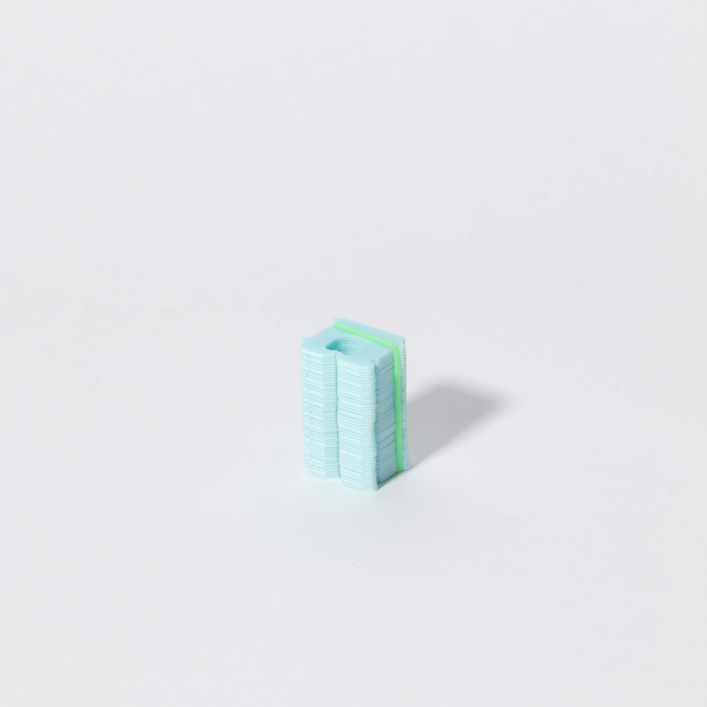
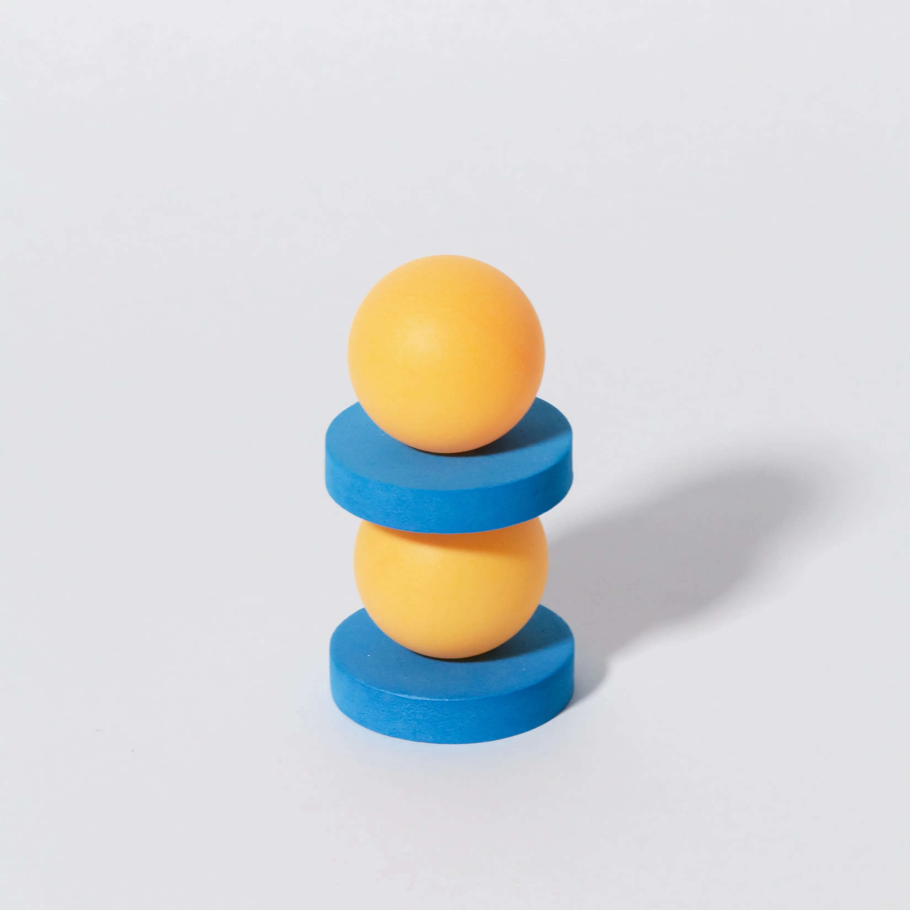
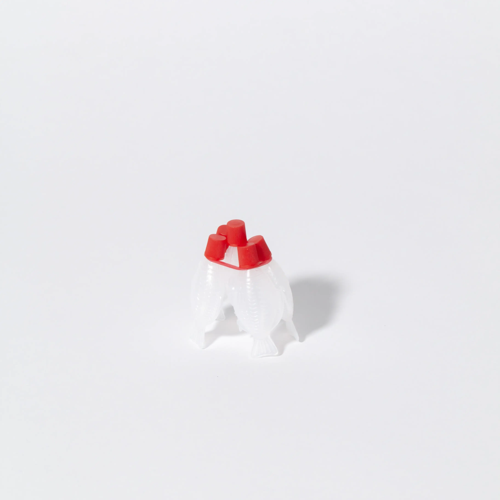
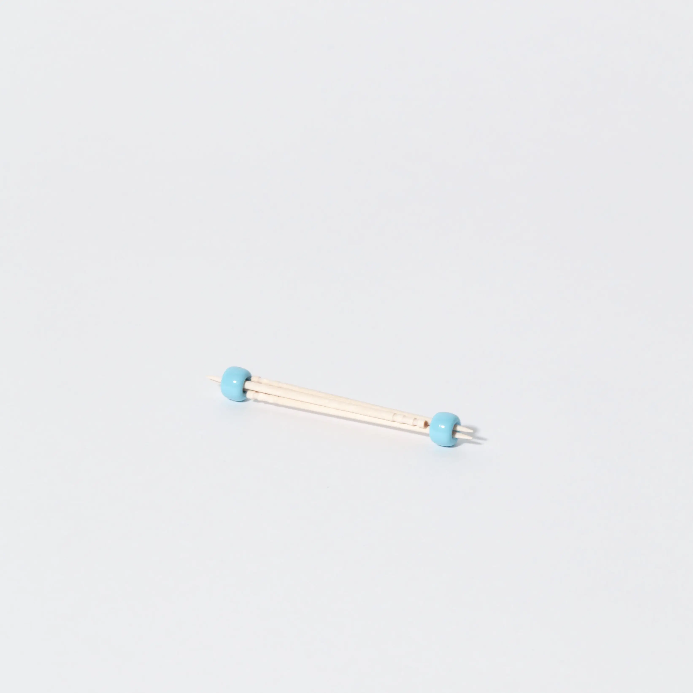

ワークショップのために制作した構成物
多摩美術大学創立9O周年記念事業 EXPLOSION & EXPANSION 爆発と拡張 ―― 多摩美術大学の制作の現場から
[Exhibition]
REMORA : Nozomi Terashima










多摩美術大学創立9O周年記念事業 EXPLOSION & EXPANSION 爆発と拡張 ―― 多摩美術大学の制作の現場から
[Exhibition]
REMORA : Nozomi Terashima







